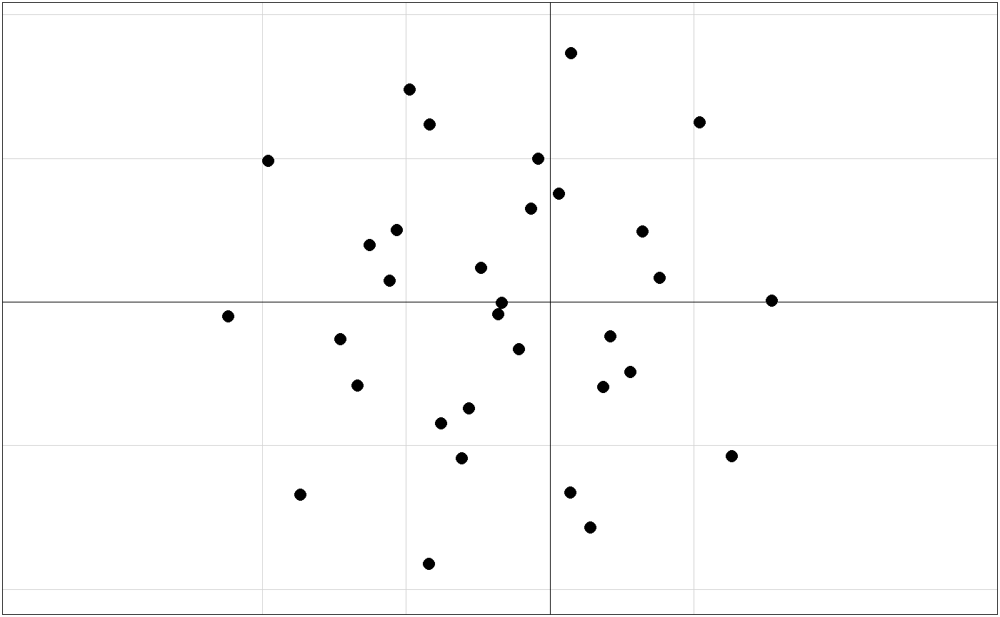
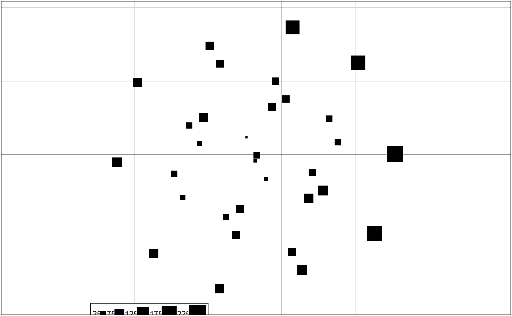

For each point on the factorial plan, display the number of identical observations (i.e. with the same coordinates).
s.freq(dfxy, xax = 1, yax = 2, ...)
| dfxy | a data frame with two coordinates |
|---|---|
| xax | column for the x axis |
| yax | column for the y axis |
| ... | additional parameters sent to |
http://joseph.larmarange.net/?Representer-des-effectifs-dans-le
if (require(ade4) & require(questionr)) { data(hdv2003) acm <- dudi.acm(hdv2003[,c("sexe","sport","bricol","cuisine","cinema")], scannf = FALSE) s.label(acm$li, clabel = 0, cpoint = 2) s.freq(acm$li, csize = 0.75) }#>